Privacy Policy
iunˋ siiˊ kienˇ boˋ fu ziin cedˋ
Privacy Policy
iunˋ siiˊ kienˇ boˋ fu ziin cedˋ


親愛的網友，歡迎蒞臨「苗栗縣政府環境保護局」(以下稱「本資訊網」)，為了尊重及保護您的個人隱私權，本資訊網制定了隱私權保護政策（Privacy Policy）。 本政策將告訴您，在使用本資訊網以及其延伸服務網站所提供的服務時，本局收集、運用及保護網友個人資料的政策與原則，敬請詳細閱讀。
以下的隱私權保護政策，適用於您在本資訊網，所涉及的個人資料之收集、運用與保護。但不適用於您經由本資訊網搜尋連結至其他網站後，所進行之活動， 關於您在其他網站的個人資料之保護，適用各該網站的隱私權保護政策。
根據本資訊網所提供的不同服務，可能向網友蒐集下列個人基本資料：
＊個人化網頁：當您申請個人化網頁時，我們會請您提供姓名、性別、聯絡電話、行動電話、電子信箱及住址等個人資訊。
＊一般瀏覽：本資訊網會保留網友在上網瀏覽或查詢時，伺服器自行產生的相關記錄(LOG)，包括連線設備IP位址、使用時間、使用的瀏覽器、瀏覽及點選資料記錄等，以歸納使用者瀏覽器在本資訊網內部所瀏覽的網頁及瀏覽時間，俾據以提昇本資訊網的服務品質。
＊其他：如果您透過便民信箱向我們反應意見，我們將保存此項通訊及處理紀錄。然而您可能在本資訊網的討論區等單元，主動向其他網友提供個人資料如電子郵件，姓名等。這種形式的資料提供，則不在本資訊網隱私權保護政策的範圍之內。
您也可能因為本資訊網的橫幅廣告或宣導之超連結，而參與其他網站或機構主辦的抽獎、競賽或行銷活動，這些機構或連結網站對於您主動提供的個人資訊，各有其個別的隱私權保護政策，其資料處理措施不適用本資訊網隱私權保護政策，本資訊網不負擔任何連帶責任。
本資訊網不會任意出售、交換、或出租任何您的個人資料給其他團體或個人。只有在以下狀況，本資訊網會在「隱私權保護政策」原則之下，運用您的個人資料。
提供其他服務或優惠：為了提供您其他服務或優惠權益，需要與提供該服務或優惠之第三者共用您的資料時，本資訊網會在活動時提供充分說明，並且在資料收集之前通知您，您可以自由選擇是否接受該項特定服務或優惠。
統計與分析：本資訊網根據使用者註冊、問卷調查、行銷活動或伺服器日誌文件，對使用者的人數、興趣和行為進行內部研究。此研究是根據全體使用者的資料進行統計分析與整理，做為本資訊網提升服務品質之參考，不會對個別使用者進行分析，亦不會提供特定對象個別資料之分析報告。
司法單位因公眾安全，要求本資訊網公開特定個人資料時，本資訊網將視司法單位合法正式的程序，以及對本資訊網所有使用者安全考量下做可能必要之配合。
為提供個人化的服務，本資訊網會使用Cookies技術來儲存並在某些時候追蹤網友的資料。Cookies是從網站傳送到瀏覽器，並保存在使用者電腦硬碟中的簡短資料。網友可以在Netscape的「功能設定」的「進階」或是IE的「Internet選項」的「安全性」中選擇修改瀏覽器對Cookies的接受程度，包括接受所有Cookies、設定收到Cookies時通知使用者、拒絕所有Cookies等。如果您選擇拒絕所有的Cookies，可能無法使用部份個人化服務或是參與部份的活動。一般而言，本資訊網會依據以下目的及情況，在網友瀏覽器中寫入並讀取Cookies︰
為提供更好、更個人化的服務：方便您參與個人化的互動活動，本資訊網可能在您註冊或登入時寫入Cookies，並在您登出時修改。
為統計瀏覽人數及分析瀏覽模式：以了解使用者瀏覽網頁情況，做為本資訊網改善服務之參考。
請妥善保管會員帳號、密碼及任何個人資料，請不要將任何個人資料，尤其是密碼提供給任何人。使用本資訊網所提供之各項會員服務之後，請在離開本資訊網之前，務必登出(Log-out)會員帳號，若您與他人共享電腦或使用公共電腦(如圖書館、學校電腦教室或網咖等)，切記要關閉瀏覽器視窗，以防止他人讀取您的個人資料、信件或進入所屬機關管理區。
本資訊網會不定時修訂本項政策，以符合最新之隱私權保護規範。當我們在使用個人資料的規定做較大幅度修改時，我們會在網頁上張貼告示，通知您相關修訂事項。
 

PAGE UP
FOLLOW US